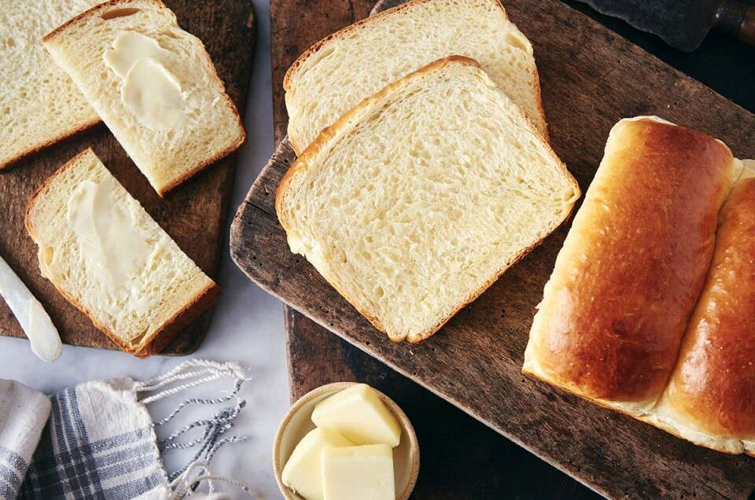

Japanese Milk Bread

Description
This recipe is our take on Japan's Hokkaido milk bread, a loaf so light it's often described as feathery. The technique to make it involves pre-cooking some of the flour and milk into a soft paste called tangzhong. (See "tips," below to learn more about its origins.) This simple step yields a loaf that''s tender, moist, and stays fresh longer than loaves prepared the standard way. Bread made with tangzhong is far and away superior to the pre-sliced, plastic-wrapped loaves that you'll find on grocery store shelves. Trust us: Once you bake and familiarize yourself with this loaf, you'll never want to buy sandwich bread again!
Ingredients
Tangzhong
- 14 grams bread flour
- 43 grams water
- 43 grams milk, whole preferred
Dough
- 300 grams bread flour
- 14 grams nonfat dry milk
- 50 grams granulated sugar
- 6 grams salt
- 1 tablespoon instant yeast
- 113 grams milk, whole preferred
- 1 large egg
- 57 grams unsalted butter, melted
Steps
- To make the tangzhong: Combine all of the ingredients in a small saucepan, and whisk until no lumps remain.
- Place the saucepan over low heat and cook the mixture, whisking constantly, until thick and the whisk leaves a line on the bottom of the pan, about 3 to 5 minutes.
- Transfer the tongzhang to a small mixing bowl or measuring cup and let it cool to lukewarm
- To make the dough: Weigh your flour; or measure it by gently spooning it into a cup, then sweeping off any excess. Combine the tangzhong with the remaining dough ingredients, then mix and knead — by mixer or bread machine — until a smooth, elastic dough forms; this could take almost 15 minutes in a stand mixer.
- Shape the dough into a ball, and le tit rest in a lightly greased bowl, covered, for 60 to 90 minutes, until puffy but not necessarily doubled in bulk
- Gently deflate the dough and divide it into four equal pieces; if you have a scale each piece will weight between 170 and 175 grams.
- Flatten each piece of dough into a 5" x 8" rectangle, then fold the short ends in towards one another like a letter. Flatten the folded pieces into rectangles again (this time about 3" x 6") and, starting with a short end, roll them each into a 4" log.
- Place the logs in a row of four — seam side down and side by side — in a lightly greased 9" x 5" loaf pan.
- Cover the loaf and allow it to rest/rise for 40 to 50 minutes, until puffy.
- Towards the end of the rising time, preheat the oven to 350°F.
- To bake the bread: Brush the loaf with milk and bake it for 30 to 35 minutes, until it's golden brown on top and a digital thermometer inserted into the center reads at least 190°F.
- Remove the loaf from the oven and cool it in the pan until you can transfer it safely to a rack to cool completely.
- Store leftover bread, well wrapped, at cool room temperature for 5 to 7 days; freeze for longer storage.